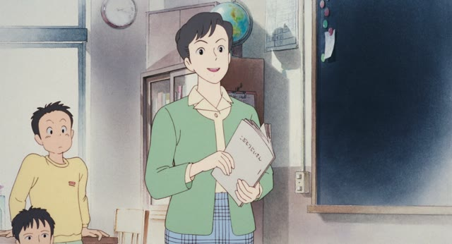

～く・～に (Adverbs)
To say how you do something, change the adjective's ending.
い becomes く, な-adjectives add に.
| Word | With a verb | |||
|---|---|---|---|---|
| い-adjective | 高い | → | 高く飛ぶ | jump high |
| な-adjective | 静か | → | 静かに話す | talk quietly |
| Odd one | いい | → | よく分かる | understand well |
Midnight Diner: Tokyo Stories · Season 2, Episode 4
いつも きれいに食べるね。
"You always eat so neatly."
Put に after a な-adjective, or turn an い-adjective's い into く, and the word now describes how you do the action. It goes right before the verb.
On this card, it answers "How does she eat?": きれいに, neatly, with nothing left on the plate.
The verb at the end decides polite or casual, here 食べる.

Only Yesterday
はい、とても良くできました。
"Yes, very well done."
Watch out for いい: its く form is よく, not いく. On this card, the teacher answers "How did you do it?": very well.
Quick Examples
Your friend is walking way too slowly.
早く来て！
"Come on, hurry!"
早い ("early, fast") → 早く = "quickly". 来て: "come!".
CasualA sign in a library.
静かにしてください。
"Please be quiet."
静か ("quiet") → 静かに = "quietly". 静かにする: "be quiet".
PoliteA kid shows you their drawing.
上手に描けたね。
"You drew that really well."
上手 ("skillful") → 上手に = "well". 描けた: "could draw".
CasualAt the hairdresser.
髪を短く切ってください。
"Please cut my hair short."
短い ("short") → 短く = "short", saying how to cut it.
PoliteSomeone asks how you slept.
昨日はよく寝た。
"I slept well last night."
いい ("good") → よく = "well". いい is the odd one: its く form comes from 良い.
CasualWith and without
静かな部屋です。
"It's a quiet room." 静かな describes the room, a noun.
静かに話してください。
"Please talk quietly." 静かに describes how you talk.
高い山です。
"It's a high mountain." 高い describes the mountain, a noun.
鳥が高く飛んでいます。
"The bird is flying high." 高く describes how it flies.
Examples from Media

Legal High · Episode 1
非常に静かなものでした。
"It was very quiet."
非常 + に turns it into "extremely". Here it describes an adjective, not a verb: it tells you how quiet. Adverbs can do both, like とても.
1 Litre of Tears · Episode 5
簡単に言わないでください。
"Please don't say it so easily."
簡単 ("easy") → 簡単に = "easily". It says how not to say it.
JoJo's Bizarre Adventure · Episode 7
詳しく読んでください。
"Please read it closely."
詳しい ("detailed") → 詳しく = "in detail, closely".
Good Morning Call · Episode 11
大事にしたいと思ってます。
"I want to take good care of her."
大事 ("precious") → 大事にする = "treat as precious, take care of".
Kotaro Lives Alone · Episode 1
つーか もっと早く歩け。
"And walk faster."
早い ("fast") → 早く = "fast". 歩け is a rough "walk!". つーか is slang for というか.
Dungeon Meshi · Episode 19
スプーンを正しく持ちなさい。
"Hold your spoon properly."
正しい ("correct") → 正しく = "correctly". It says how to hold it.
Quartet · Episode 1
うまく弾けないかも。
"I might not be able to play well."
うまい ("good, skilled") → うまく = "well". 弾けない: "can't play".
Slam Dunk · Episode 11
いいな 高く跳べる人は。
"Must be nice, being able to jump high."
高い ("high") → 高く = "high". It says how high you can jump.
Further Reading
A Dictionary of Basic Japanese Grammar
Appendix 1, Basic Conjugations (adverbial column) · p. 581
Tae Kim's Guide to Japanese Grammar
Adverbs and Sentence-ending particles · Properties of Adverbs